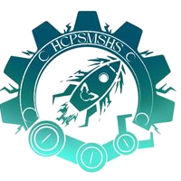
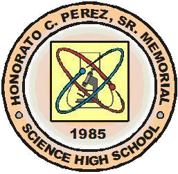

INSPARKS: Robotics Club
of

Honorato C. Perez Sr. Memorial Science High School
Mission
Our mission is to inspire and empower the next generation of innovators through robotics. We strive to create a dynamic and
inclusive high school robotics club where students can explore, learn, and excel in the exciting field of robotics and coding.
Our club is dedicated to fostering creativity, teamwork, and problem-solving skills while promoting a passion for science,
technology, engineering, and mathematics (STEM). Together, we aim to build, design and compete with cutting-edge robots that
tackle real-world challenges, preparing our members for a future driven by innovation and automation.
Vision
Our vision is to be the leading high school robotics club known for its commitment to excellence, diversity, and community
engagement. We envision a future where our members are not only proficient in robotics and coding, but also compassionate
leaders who use their skills to make a positive impact on society. Through continuous learning, collaboration and outreach,
we aspire to create a supportive and healthy environment that encourages our members to think critically, aim high, and
transform their ideas into reality. Together, we are shaping the future of robotics while inspring others to embrace the
limitless posibilities of science, technology, engineering, and mathematics.
Club Announcements!
December 14, 2023 (7:04 AM / 07:04) - Good day, Roboticists! We'll be holding our officer elections
today, December 14th, from 7:00 to 8:00 pm. The link will be sent to the Facebook GC 5 mins prior to the event.
More details at our Facebook Page!
October 17, 2023 (2:58 PM / 14:58) - Welcome, we are now RECRUITING
for NEW MEMBERS! Find the registration form at our Facebook link below!